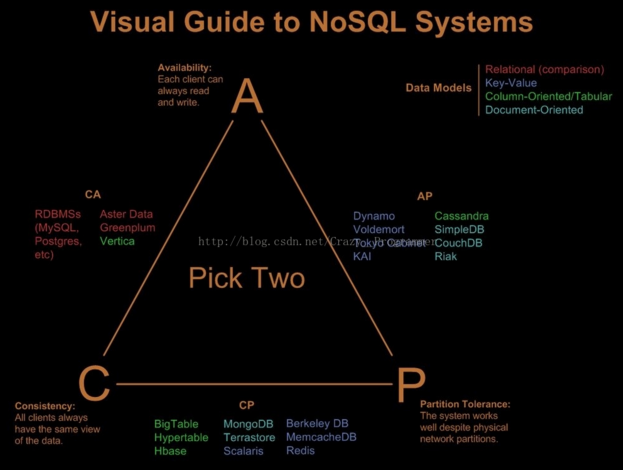
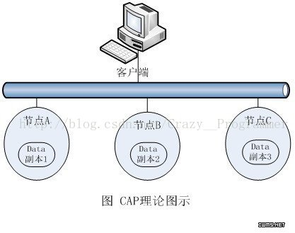

CAP 理论简述
海量数据管理中一致性理论，包括:CAP理论，BAS理论，数据一致性理论模型，以及现有的经典数据一致性技术。其中 CAP(Consistency,Availability,Partition Tolerance)，理论是NoSQL 数据库管理系统构建的基础。
CAP定律说的是在一个分布式计算机系统中，一致性、可用性和分区容错性这三种保证无法同时得到满足，最多满足两个。该定律作为猜想在2000年提出，2002年被证实。

强一致性(Consistency)：系统在执行过某项操作后仍然处于一致的状态。在分布式系统中，更新操作执行成功后所有用户都应该读取到最新的值，这样的系统被认为是具有强一致性的。
可用性(Availability)：每一个操作总是能够在一定的时间内返回结果，这里需要注意的是一定的时间内 和 返回结果。一定的时间内指的是，在可容忍的范围内返回结果，结果可以使成功或失败。
分区容错性(Partition Tolerance)：理解为在存在网络分区的情况下，仍然可以接受请求（瞒住一致性和可用性）。这里的网络分区是指由于某种原因，网络被分成若干个 孤立的区域，而区域之间互不相通。还有一些人将分区容错性理解为系统对节点动态加入和离开的能力，因为节点的加入和离开可以认为是集群内部的网络分区。
放弃P：如果想避免分区容错性问题的发生，一种做法是将所有的数据（与实务相关的）都放在一台机器上。虽然无法 100% 保证系统不会出错，但不会碰到由于分区带来的负面效果。当然这个选择会严重的影响系统的拓展性。
放弃A：对于放弃分区容错性来说，反面就是放弃可用性。一旦遇到分区容错故障，那么受到影响的服务需要等待一定的时间，因此在等待期间系统无法对外提供服务。
放弃C：这里所说的放弃 一致性，并不是完全放弃数据的一致性，而是放弃数据的强一致性，而保留数据的最终一致性。以网路购物为例，对剩下一件库存的商品，如果同时接受了两份订单，那么较晚的订单将被告知商品告罄。
二、CAP的理解
常见的理解及分析:
目前流行的对CAP理论解释的情形是从同一数据在网络环境中存在多个副本出发为前提。为了保证数据不会丢失，同时也是为了增加并发访问量（读写分离），在企业级的数据管理方案中，一般必须考虑数据的冗余存储问题，二者应该是通过在网络上的其他独立物理存储节点上保留另一份或多分数据副本来实现的（如图）。因为在同一个存储节点上的数据冗余明显不能解决单点故障问题，这与通过多节点集群来提供更好的计算可用性的道理是相同的。

如上图情况，数据在节点A、B、C上保留三份，如果对节点A上的数据进行了修改，然后再让客户端通过网络对该数据进行读取。那么客户端的读取操作什么时候返回呢？
一种情况是要求节点A、B、C的三分数据完全一致后返回。也就是说，这时从任何一个网络节点读取的数据都是一样的，这就是强一致性读。很明显，这时数据读取的 Latency 要高一些（因为要等数据在网络中的复制），同时A、B、C三个节点中任何一个宕机都会导致数据不可用。也就是说，要保证强数据一致性，网络中的副本越多，数据的可用性就越差。
另一种情况是，允许读操作立即返回，容忍B节点的读取与A节点不一致的情况发生。这样一来，可用性显然得到提高，网络中的副本也可以多一些，唯一得不到保证的是数据一致性。当然，对写操作同样也有多个节点一致性的情况，再次不再赘述。
可以看出，上述对CAP理论的解释主要是从网络上多个节点之间的读写一致性触发考虑问题的。而这一点，对于关系型数据库意味着什么呢？当然我们通常所说的Standby(关于分布式事务，涉及到更多考虑)情况。对此，在实践中我们大多已经采取了弱一致性的异步延时同步方案以提高可用性。这种情况并存在关系型数据库为保证C、A而放弃P 的情况；而对海量数据管理的需求，关系型数据库扩展过程中所遇到的性能瓶颈，似乎也并不是CAP理论中所描述的那种原因造成的。那么，上述流行的说法中所描述的关系型数据库为保证C、A而牺牲P到底是指什么呢？
如果只将CAP当作分布式系统中多个数据副本之间的 读写一致性问题 的通用理论对待，那么就可以得出结论：CAP既适用于 NoSQL数据库，也适用于关系型数据库。它是NoSQL数据库、关系型数据库，乃至一切分布式系统在设计数据多个副本之间读写一致性问题时需要遵循的共同原则。
例子
我们采用的数据库方案一般是 一写多读模式。多台读机器 会从写机器 同步数据，这是为了 可用性原则，任何时候，你都可读取数据，没有任何 延迟（A属性）。但是 数据一致性 便受到了挑战（C）。多台机器目前基本上是必选了（P）。
两种重要的分布式场景
关于对CAP理论中 一致性C 的理解，除了上述数据副本之间的读写一致性以外，分布式环境中还有两种非常重要的场景，如果不对它们进行认识与讨论，就永远无法全面地理解CAP，当然也就无法根据CAP做出正确的解释。
1.分布式环境中的事务场景
我们知道，在关系型数据库的事务操作遵循 ACID原则，其中的一致性C，主要是指一个事务中相关联的数据在事务操作结束后是 一致的。所谓ACID原则，是指在写入/异动资料的过程中，为保证交易正确可靠所必须具备的四个特性：即原子性（Atomicity，或称不可分割性）、一致性（Consistency）、隔离性（Isolation，又称独立性）和持久性（Durability）。
例如银行的一个存款交易事务，将导致交易流水表增加一条记录。同时，必须导致账户表余额发生变化，这两个操作必须是一个事务中全部完成，保证相关数据的一致性。而前文解释的CAP理论中的C是指对一个数据多个备份的读写一致性。表面上看，这两者不是一回事，但实际上，却是本质基本相同的事物：数据请求会等待多个相关数据操作全部完成才返回。对分布式系统来讲，这就是我们通常所说的分布式事务问题。 众所周知，分布式事务一般采用两阶段提交策略来实现，这是一个非常耗时的复杂过程，会严重影响系统效率，在实践中我们尽量避免使用它。在实践过程中，如果我们为了扩展数据容量将数据分布式存储，而事务的要求又完全不能降低。那么，系统的可用性一定会大大降低，在现实中我们一般都采用对这些数据不分散存储的策略。
当然，我们也可以说，最常使用的关系型数据库，因为这个原因，扩展性（分区可容忍性P）受到了限制，这是完全符合CAP理论的。但同时我们应该意识到，这对NoSQL数据库也是一样的。如果NoSQL数据库也要求严格的分布式事务功能，情况并不会比关系型数据库好多少。只是在NoSQL的设计中，我们往往会弱化甚至去除事务的功能，该问题才表现得不那么明显而已。
因此，在扩展性问题上，如果要说关系型数据库是为了保证C、A而牺牲P，在尽量避免分布式事务这一点上来看，应该是正确的。也就是说：关系型数据库应该具有强大的事务功能，如果分区扩展，可用性就会降低；而NoSQL数据库干脆弱化甚至去除了事务功能，因此，分区的可扩展性就大大增加了。
总结
也就是说，未分区的关系型数据库是 满足了CA理论，但摒弃了P理论。
2.分布式环境中的关联场景
初看起来，关系型数据库中常用的多表关联操作与CAP理论就更加不沾边了。但仔细考虑，也可以用它来解释数据库分区扩展对关联所带来的影响。对一个数据库来讲，采用了分区扩展策略来扩充容量，数据分散存储了，很显然多表关联的性能就会下降，因为我们必须在网络上进行大量的数据迁移操作，这与CAP理论中数据副本之间的同步操作本质上也是相同的。
因此，如果要保证系统的高可用性，需要同时实现强大的多表关系操作的关系型数据库在分区可扩展性上就遇到了极大的限制（即使是那些采用了各种优秀解决方案的MPP架构的关系型数据库，如TeraData，Netezza等，其水平可扩展性也是远远不如NoSQL数据库的），而NoSQL数据库则干脆在设计上弱化甚至去除了多表关联操作。那么，从这一点上来理解”NoSQL数据库是为了保证A与P，而牺牲C”的说法，也是可以讲得通的。当然，我们应该理解，关联问题在很多情况下不是并行处理的优点所在，这在很大程度上与Amdahl定律相符合。
所以，从事务与关联的角度来看关系型数据库的分区可扩展性为什么受限的原因是最为清楚的。而NoSQL数据库也正是因为弱化，甚至去除了像事务与关联（全面地讲，其实还有索引等特性）等在分布式环境中会严重影响系统可用性的功能，才获得了更好的水平可扩展性。
那么，如果将事务与关联也纳入CAP理论中一致性C的范畴的话，问题就很清楚了：关于“关系型数据库为了保证一致性C与可用性A，而不得不牺牲分区可容忍性P”的说法便是正确的了。但关于”NoSQL选择了C与P，或者A与P”的说法则是错误的，所有的NoSQL数据库在设计策略的大方向上都是选择了A与P（虽然对同一数据多个副本的读写一致性问题的设计各有不同），从来没有完全选择C与P的情况存在。
现在看来，如果理解CAP理论只是指多个数据副本之间读写一致性的问题，那么它对关系型数据库与NoSQL数据库来讲是完全一样的，它只是运行在分布式环境中的数据管理设施在设计读写一致性问题时需要遵循的一个原则而已，却并不是NoSQL数据库具有优秀的水平可扩展性的真正原因。而如果将CAP理论中的一致性C理解为读写一致性、事务与关联操作的综合，则可以认为关系型数据库选择了C与A，而NoSQL数据库则全都是选择了A与P，但并没有选择C与P的情况存在。
总结
nosql 更关注的是A与P，而mysql则更关注的是 A与C
三 一致性分类
对于分布式数据系统，分区容忍性是基本要求，否则就失去了价值。因此设计分布式数据系统，就是在一致性和可用性之间取一个平衡。对于大多数WEB应用，其实并不需要强一致性，因此牺牲一致性而换取高可用性，是多数分布式数据库产品的方向。
当然，牺牲一致性，并不是完全不管数据的一致性，否则数据是混乱的，那么系统可用性再高分布式再好也没有了价值。牺牲一致性，只是不再要求关系型数据库中的强一致性，而是只要系统能达到最终一致性即可，考虑到客户体验，这个最终一致的时间窗口，要尽可能的对用户透明，也就是需要保障“用户感知到的一致性”。通常是通过数据的多份异步复制来实现系统的高可用和数据的最终一致性的，“用户感知到的一致性”的时间窗口则取决于数据复制到一致状态的时间。
对于一致性，可以分为从客户端和服务端两个不同的视角。从客户端来看，一致性主要指的是多并发访问时更新过的数据如何获取的问题。从服务端来看，则是更新如何复制分布到整个系统，以保证数据最终一致。一致性是因为有并发读写才有的问题，因此在理解一致性的问题时，一定要注意结合考虑并发读写的场景。
从客户端角度，多进程并发访问时，更新过的数据在不同进程如何获取的不同策略，决定了不同的一致性。对于关系型数据库， 要求更新过的数据能被后续的访问都能看到，这是强一致性。如果能容忍后续的部分或者全部访问不到，则是弱一致性。如果经过一段时间后要求能访问到更新后的数据，则是最终一致性。
在MongoDB中可以通过配置让复制集成员内部支持强一致性，这时可以设置一个写成功数，只有写操作成功树满足设定的值时才会向客户端返回结果。
最终一致性根据更新数据后各进程访问到数据的时间和方式的不同，又可以区分为：
因果一致性(CAUSAL CONSISTENCY)，如果进程A通知进程B它已更新了一个数据项，那么进程B的后续访问将返回更新后的值，且一次写入将保证取代前一次写入。与进程A无因果关系的进程C的访问遵守一般的最终一致性规则。读己之所写（READ-YOUR-WRITES）一致性，当进程A自己更新一个数据项之后，它总是访问到更新过的值，绝不会看到旧值。这是因果一致性模型的一个特例。
会话（SESSION）一致性，这是上一个模型的实用版本，它把访问存储系统的进程放到会话的上下文中。只要会话还存在，系统就保证“读己之所写”一致性。如果由于某些失败情形令会话终止，就要建立新的会话，而且系统的保证不会延续到新的会话。单调（MONOTONIC）读一致性，如果进程已经看到过数据对象的某个值，那么任何后续访问都不会返回在那个值之前的值。单调写一致性，系统保证来自同一个进程的写操作顺序执行。要是系统不能保证这种程度的一致性，就非常难以编程了。
上述最终一致性的不同方式可以进行组合，例如单调读一致性和读己之所写一致性就可以组合实现。并且从实践的角度来看，这两者的组合，读取自己更新的数据，和一旦读取到最新的版本不会再读取旧版本，对于此架构上的程序开发来说，会少很多额外的烦恼。
从服务端角度，如何尽快将更新后的数据分布到整个系统，降低达到最终一致性的时间窗口，是提高系统的可用度和用户体验非常重要的方面。对于分布式数据系统：N — 数据复制的份数,W — 更新数据是需要保证写完成的节点数,R — 读取数据的时候需要读取的节点数，如果W+R>N，写的节点和读的节点重叠，则是强一致性。例如对于典型的一主一备同步复制的关系型数据库，N=2,W=2,R=1，则不管读的是主库还是备库的数据，都是一致的。如果W+R<=N，则是弱一致性。例如对于一主一备异步复制的关系型数据库，N=2,W=1,R=1，则如果读的是备库，就可能无法读取主库已经更新过的数据，所以是弱一致性。
对于分布式系统，为了保证高可用性，一般设置N>=3。不同的N,W,R组合，是在可用性和一致性之间取一个平衡，以适应不同的应用场景。如果N=W,R=1，任何一个写节点失效，都会导致写失败，因此可用性会降低，但是由于数据分布的N个节点是同步写入的，因此可以保证强一致性。如果N=R,W=1，只需要一个节点写入成功即可，写性能和可用性都比较高。但是读取其他节点的进程可能不能获取更新后的数据，因此是弱一致性。这种情况下，如果W<(N+1)/2，并且写入的节点不重叠的话，则会存在写冲突。
四 传统数据库与NoSQL数据库
传统的关系型数据库在功能支持上通常很宽泛，从简单的键值查询，到复杂的多表联合查询再到事务机制的支持。而与之不同的是，NoSQL系统通常注重性能和扩展性，而非事务机制（事务就是强一致性的体现）。
传统的SQL数据库的事务通常都是支持ACID的强事务机制。A代表原子性，即在事务中执行多个操作是原子性的，要么事务中的操作全部执行，要么一个都不执行;C代表一致性，即保证进行事务的过程中整个数据加的状态是一致的，不会出现数据花掉的情况;I代表隔离性，即两个事务不会相互影响，覆盖彼此数据等;D表示持久化，即事务一量完成，那么数据应该是被写到安全的，持久化存储的设备上（比如磁盘）。
NoSQL系统仅提供对行级别的原子性保证，也就是说同时对同一个Key下的数据进行的两个操作，在实际执行的时候是会串行的执行，保证了每一个Key-Value对不会被破坏。例如MongoDB数据库，它是不支持事务机制的，同时也不提倡多表关联的复杂模式设计，它只保证对单个文档(相当于关系数据库中的记录)读写的原子性。
转自:http://www.liaoqiqi.com/post/251